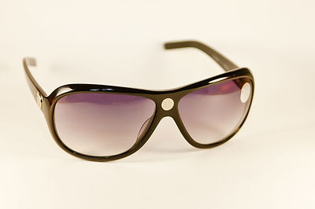
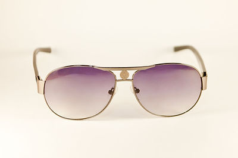
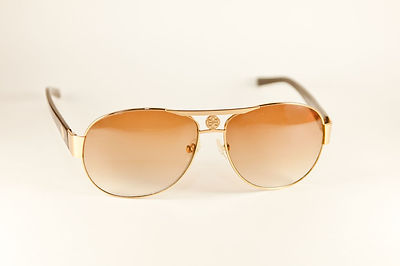
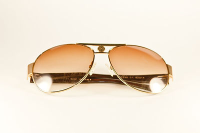
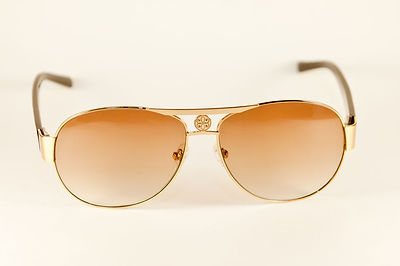
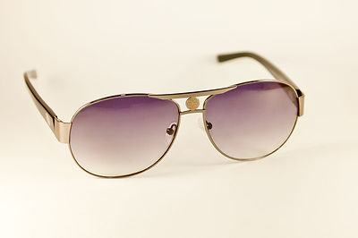
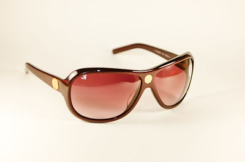
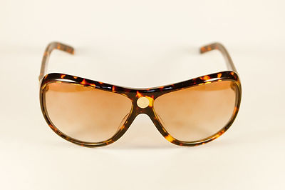
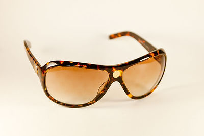

ОЧКИ «ЯЙ-ОСИДО»
|  |  |
|---|---|
|  |  |
|  |  |
|  |  |
|  | |
Институт проблем образования Республики Азербайджан
ЛАБОРАТОРИЯ ПСИХОГИГИЕНЫ И МЕДИКО-ПСИХОЛОГИЧЕСКОЙ
ДИАГНОСТИКИ
Способ коррекции функционального состояния зрения
человека
ОЧКИ «ЯЙ-ОСИДО»
Способ заключается в использовании очков с нанесенным
на линзы символом «Яй-Осидо».
При их применении снимается усталость глаз, повышаются
интеллектуальная и физическая работоспособность, свето- и цветочувствительность сетчатки,
улучшаются зрительные функции, усиливается острота зрения, расширяется поле зрения, проводится
коррекция психоэмоционального состояния (снижаются раздражительность, тревожность, ригидность),
сокращается время восстановления организма, повышаются адаптационные возможности.
В основе разработки использован
Гармонизатор «ЯЙ-ОСИДО: ЗЕРКАЛО ЖИЗНИ»
Патент Украины на полезную модель № 58256 от 11.04.2011
Гармонизатор «Яй-Осидо» продолжает серию гармонизаторов
«Ключ Жизни». Научная основа разработки – метод Психографии Я.С.Ибадова, рунные технологии В.П.
Гоч, результаты проведенных научных исследований, полученные современными инструментальными
электрофизиологическими методами (ЭКГ, ЭЭГ, ЭМГ, Фолля, ГРВ), с помощью системы
«AURA-Vibraimag», диагностического комплекса «Омега-2М» и методом информа-ционного контроля
(торсионный фазовый портрет).
Европейское признание
Изобретение было удостоено награды
"Европейское качество" и лицензией
Европейской Бизнес Ассамблеи из 28 стран Европы, Азии,
Африки и Латинской Америки.
Данный приз и лицензия соответствуют уровню брендов
Европы на изобретения.
№ заявки на изобретение U 2013 08972